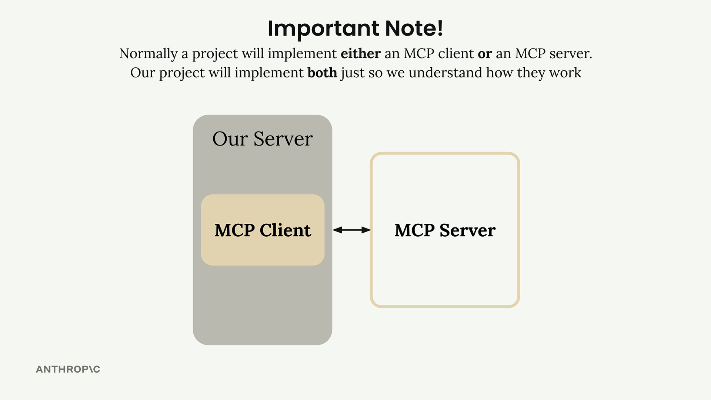
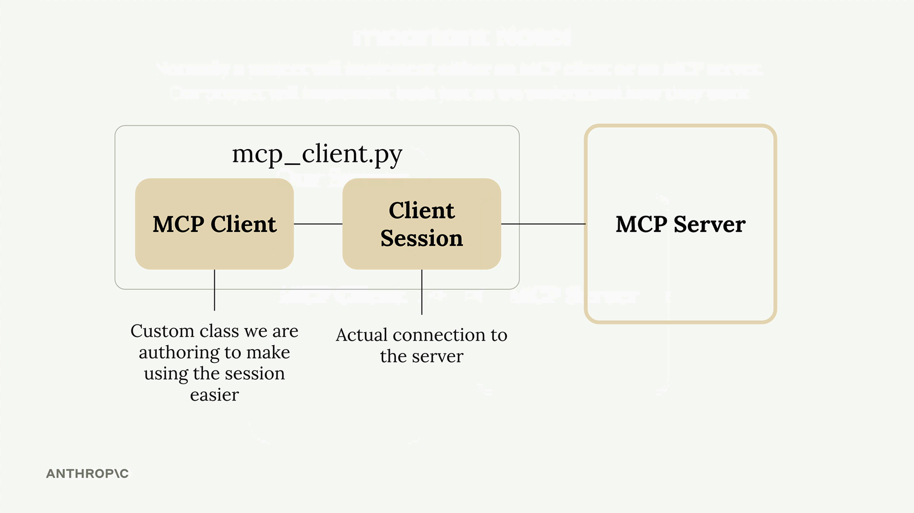
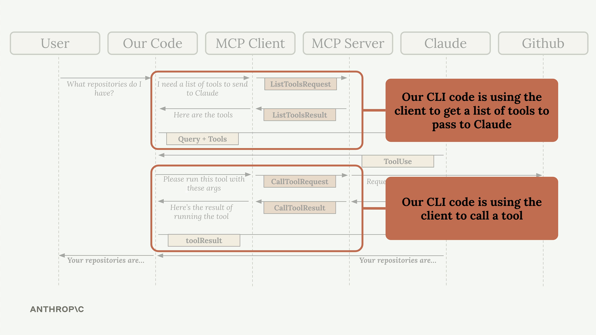

Реализация клиента
Чему научитесь
Видео 7:26 и текст урока
К концу урока вы сможете:
- объяснить, из чего состоит клиент: свой класс MCP Client и Client Session из MCP Python SDK, и зачем нужна обёртка;
- реализовать функции
list_tools()иcall_tool()через сессию; - проверить клиент тестовой обвязкой, а весь поток с Claude — в CLI.
Видео и текст урока.
Смотреть урок на Skilljar Implementing a client · 7:26MCP-сервер работает — пора браться за клиентскую сторону. Именно через клиент код приложения общается с MCP-сервером и получает доступ к его функциональности.
Устройство клиента
В большинстве реальных проектов вы реализуете либо MCP-клиент, либо MCP-сервер, но не оба сразу. В этом проекте мы строим и то и другое только для того, чтобы увидеть, как они работают вместе.

MCP-клиент состоит из двух основных частей:
- MCP Client — наш собственный класс, который упрощает работу с сессией;
- Client Session — само соединение с сервером (часть MCP Python SDK).

mcp_client.py.Client Session требует аккуратного обращения с ресурсами: когда работа закончена, соединения нужно правильно закрыть. Поэтому мы оборачиваем сессию в собственный класс, который выполняет всю очистку автоматически.
Место клиента в приложении
Помните схему потока нашего приложения? Именно клиент позволяет нашему коду взаимодействовать с MCP-сервером в двух ключевых точках:

Наш код CLI использует клиент, чтобы:
- получить список доступных инструментов и отправить его Claude;
- выполнять инструменты, когда Claude их запрашивает.
Реализуем основные функции клиента
Нужно реализовать две важнейшие функции: list_tools() и call_tool().
Функция list_tools
Эта функция получает с MCP-сервера все доступные инструменты:
async def list_tools(self) -> list[types.Tool]:
result = await self.session().list_tools()
return result.tools
Всё просто: обращаемся к сессии (соединению с сервером), вызываем встроенный метод list_tools() и возвращаем инструменты из результата.
Функция call_tool
Эта функция выполняет на сервере конкретный инструмент:
async def call_tool(
self, tool_name: str, tool_input: dict
) -> types.CallToolResult | None:
return await self.session().call_tool(tool_name, tool_input)
Мы передаём серверу имя инструмента и входные параметры (их даёт Claude) и возвращаем результат.
Проверяем клиент
Внизу файла клиента есть простая тестовая обвязка. Файл можно запустить напрямую и убедиться, что всё работает:
uv run mcp_client.py
Скрипт подключится к вашему MCP-серверу и выведет доступные инструменты. В выводе будут определения ваших инструментов вместе с описаниями и схемами входных данных.
Собираем всё вместе
Когда функции клиента реализованы, можно проверить весь поток целиком — запустить основное приложение:
uv run main.py
Спросите: «What is the contents of the report.pdf document?»
Вот что при этом происходит за кулисами:
- приложение через клиент получает доступные инструменты;
- эти инструменты отправляются Claude вместе с вашим вопросом;
- Claude решает воспользоваться инструментом
read_doc_contents; - приложение через клиент выполняет этот инструмент;
- результат возвращается Claude, и тот отвечает вам.
Клиент служит мостом между логикой приложения и функциональностью MCP-сервера: благодаря ему мощные инструменты легко встраиваются в рабочие процессы с ИИ.
Дальше
Следующий урок — «Ресурсы»: второй примитив MCP-сервера, через который приложение получает данные напрямую, без вызова инструментов.
Оригинал урока: Implementing a client.